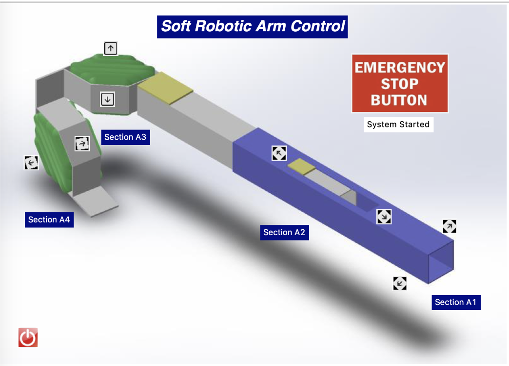
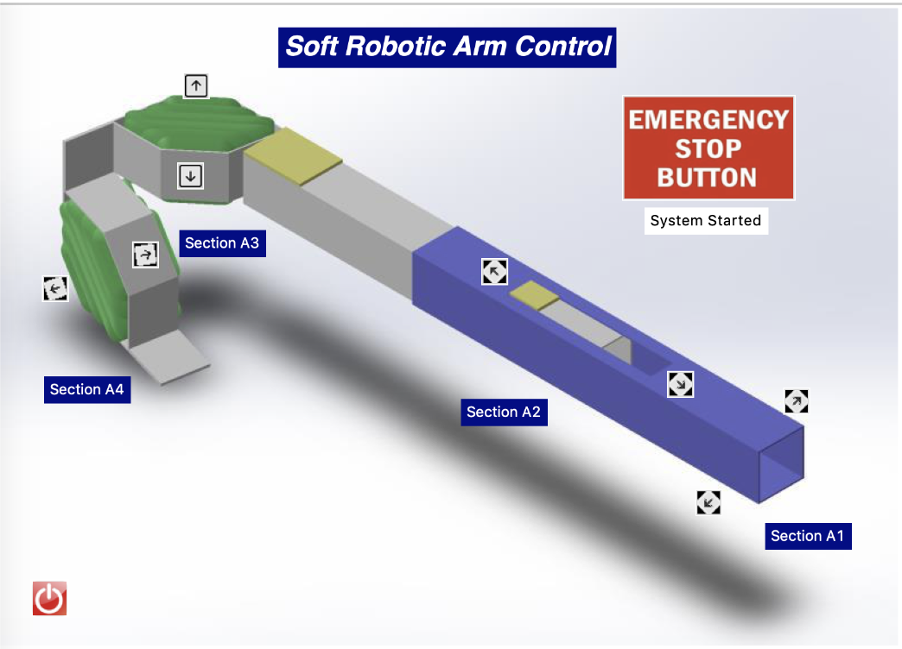

Medical Robotics Research Project
From 3/2019 to 5/2020, I worked as a research assistant in the Material Robotics Lab at Boston University. Under supervision of Professor Russo, I worked on a project to design a soft robotic arm to assist surgical tasks during minimally invasive surgery. The arm should by attached at the tip of a rigid endoscope and be able to fold and move in 3 DOF. The material of the arm should be soft, low-cost, and biocompatible. The arm should be able to be remotely controlled by a surgeon.
Initially it was 2 of us working on this project. I was focused on designing the soft actuators that will be placed at the joints of the arm. And the other student was focused on designing the rigid parts of the arm structure. After another 2 students joined the project, I switched to work on designing the electo-mechanical control system and the GUI for remote control. The other students focused on integrating the soft actuators with the rigid arm structure, and running simulations on SolidWorks. After a year of work, we successfully built a prototype of the arm and demonstrated its functionality with a pneumatic control system and GUI.
Mechanical Design
Using AutoCAD and SolidWorks, I designed the soft actuators for the joints based on this paper. The actuators are fabricated using laser cutting and thermal bonding. By injecting air or liquid into the actuator, it will pop-up and provide force based on pressure. The most challenging part was to design the actuator so that it can be fabricated in millimeter scale. After trying dozens of designs, I went from larger scale to millimeter scale and finally delivered a reliable design and fabrication recipe for the soft actuators. (The Green parts in the picture above)
After incorporating the soft actuators into the arm structure, we are able to bend and extend the arm by injecting air into the actuators. The actuators at the joints of the arm are able to provide 4N of force at max pressure.
Control System
For the second half of the project, I was responsible for designing the control system for the arm. After consulting with the Phd students in the lab and a student who is designing a similar control system at another lab, I came up with a design that consists of a microcontroller, pneumatic valves, pressure sensors, and a GUI for remote control. The compressed air and vaccum systems in the lab provide sources for actuation. When user commands on the GUI to move the arm, the microcontroller will open the corresponding valve to inject or retract the air in the actuator. The pressure sensors provide feedback to the microcontroller so that it can control the valves to maintain the desired pressure. The GUI was designed using Python and TKinter. It communicates with the microcontroller through serial port and allows user to control the arm by clicking the buttons.
 

Unfortunately, due to the COVID-19 pandemic, the lab closed down before we could do more testing on the arm and record nice videos of it.